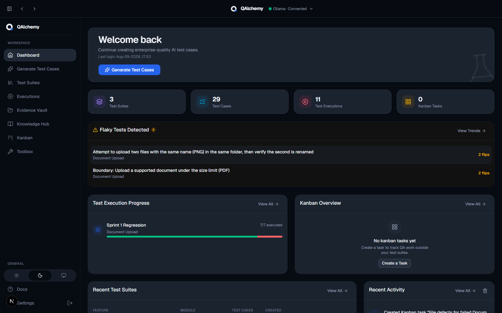

Transform user stories, requirements, and acceptance criteria into comprehensive software test cases in a single AI call.

Bring your own key · works with
Every screen captured directly from the real application — no mockups, no fiction.
Fill in a feature name, module, user story, and acceptance criteria. Add business rules or context if you have them, then pick the testing categories that matter for this flow.


QAlchemy reasons like a senior QA engineer: it extracts business rules, surfaces requirement gaps, assesses risk, and produces high level scenarios before writing a single test case.
Every generated test case is structured, filterable by category, severity, and priority, and fully editable — add, insert, duplicate, or delete rows and it saves instantly.


Test Suites — every suite you've generated, in one place

Settings — provider config, API keys, and backup & restore
Current, shipped functionality — nothing speculative.
Selects appropriate testing techniques instead of returning generic templates.
Functional, Negative, Boundary, Validation, API, UI, Integration, Regression, Security, Accessibility, Exploratory.
Maps every acceptance criterion to the test cases that cover it.
Works with Anthropic, OpenAI, Gemini, or a local Ollama install.
Paste your own API key. Keys live only in your browser, never on a server.
Download a full backup of your suites and settings, restore anywhere.
Excel, Azure DevOps, Jira/Xray, TestRail, Markdown, CSV, and JSON.
MIT licensed. No account system, no server side database.
Manual test writing doesn't scale with how fast requirements change.
Clearly separated from what ships today — nothing below is implemented yet.
No account system, no server side database, no vendor lock-in. QAlchemy runs entirely in your browser and works with whichever AI provider you choose.
If QAlchemy saves your team time, consider supporting its continued development.
Buy me a coffee